calamares-install fail
exit 141
vm-defined
[state card -- rendered from VBoxManage showvminfo, not a screenshot]
VM defined (pre-boot)
memory=4096
vram=128
chipset="piix3"
firmware="EFI"
SecureBoot="off"
VMState="poweroff"
nic1="nat"
fail content: UNVALIDATED (no golden) firmware-logo
OCR text
vbox-host
[host evidence -- rendered from VBoxManage, not a screenshot]
VirtualBox host software
VBoxManage version: 7.2.20r175154
Processor online count: 8
Processor core count: 8
Memory size: 63912 MByte
Operating system: Linux
Operating system version: 6.12.111+deb13-amd64
firmware-state (live / pre-install)
[state card -- rendered from VBoxManage showvminfo, not a screenshot]
Firmware / Secure Boot varstore state
memory=4096
vram=128
chipset="piix3"
firmware="EFI"
SecureBoot="off"
VMState="poweroff"
nic1="nat"
fail content: UNVALIDATED (no golden) vbox-manager

OCR text
fail content: UNVALIDATED (no golden) live-grub-menu (live / pre-install)
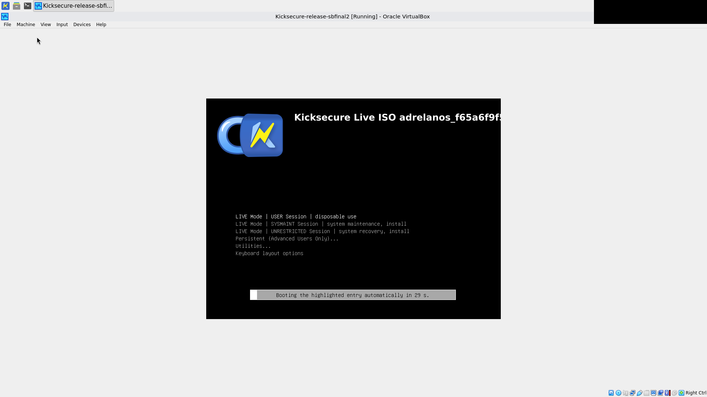
OCR text
fail content: UNVALIDATED (no golden) live-grub-entry-selected (live / pre-install)
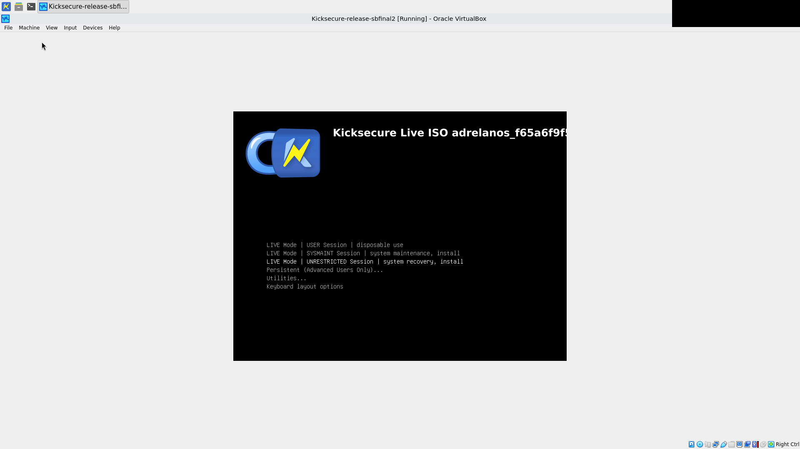
OCR text
fail content: UNVALIDATED (no golden) live-guestcontrol-ready (live / pre-install)
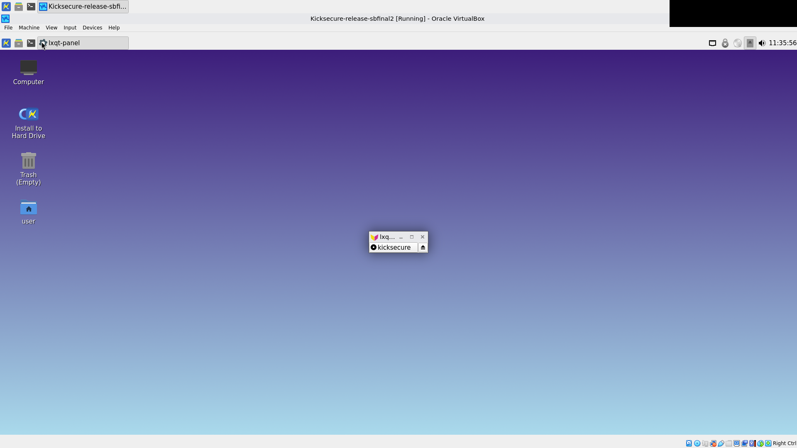
OCR text
fail content: UNVALIDATED (no golden) install-host-launched (live / pre-install)
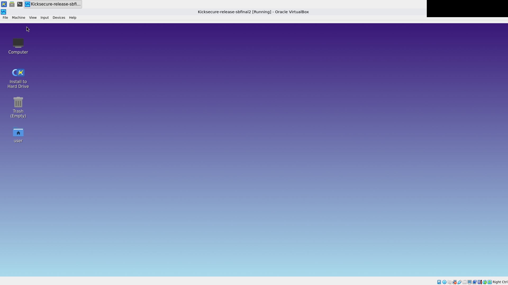
OCR text
fail content: validated welcome (live / pre-install)
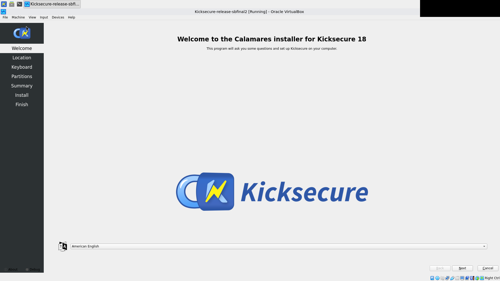
OCR text
fail content: validated location
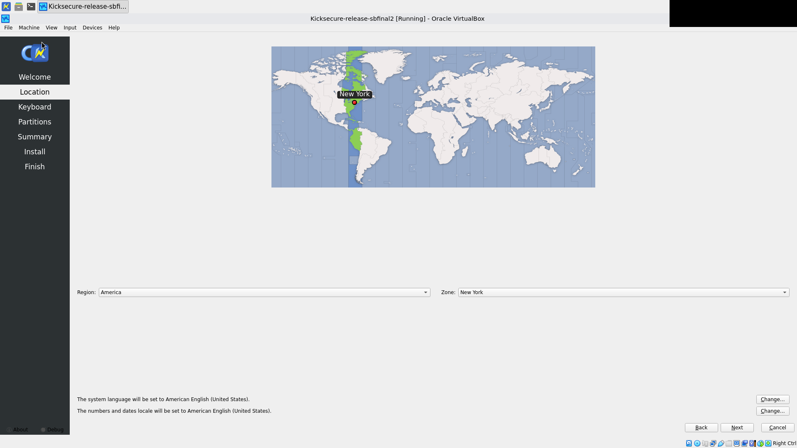
OCR text
fail content: UNVALIDATED (no golden) keyboard
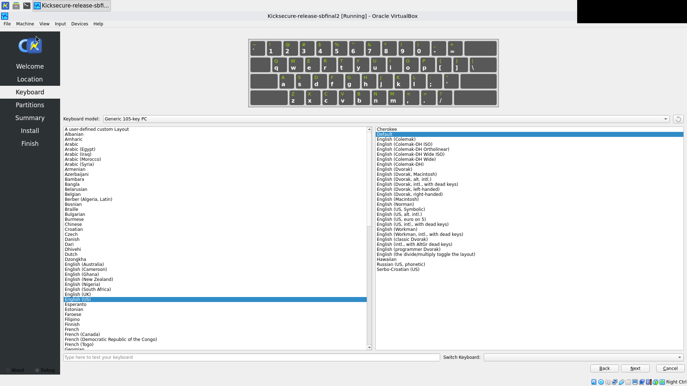
OCR text
fail content: validated partitions (live / pre-install)
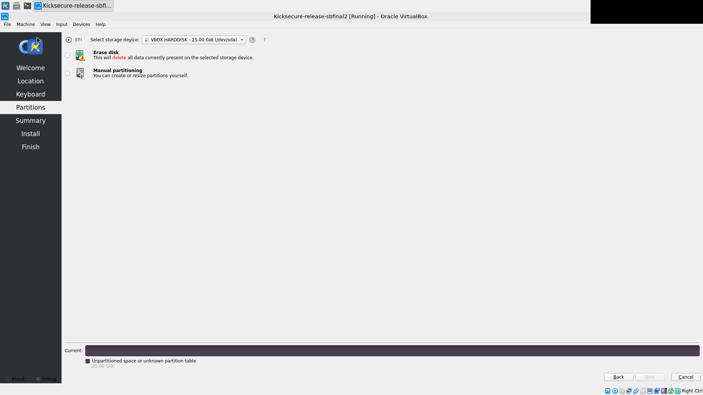
OCR text
fail content: validated partitions-luks-filled (live / pre-install)
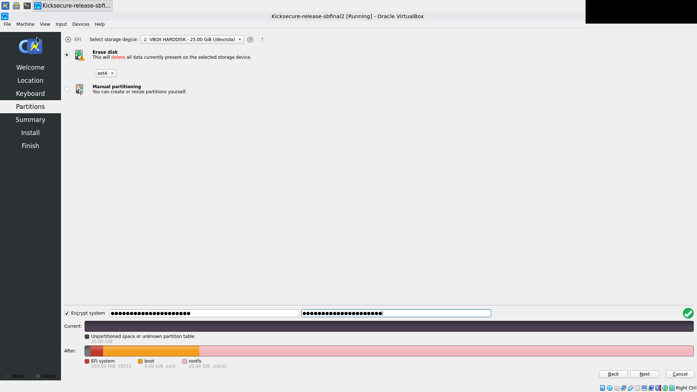
OCR text
fail content: validated summary
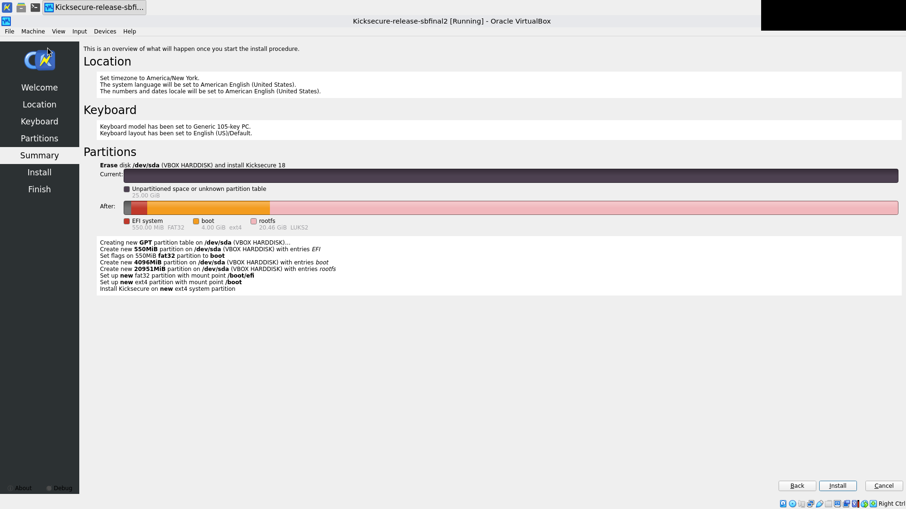
OCR text
fail content: validated install-started (live / pre-install)
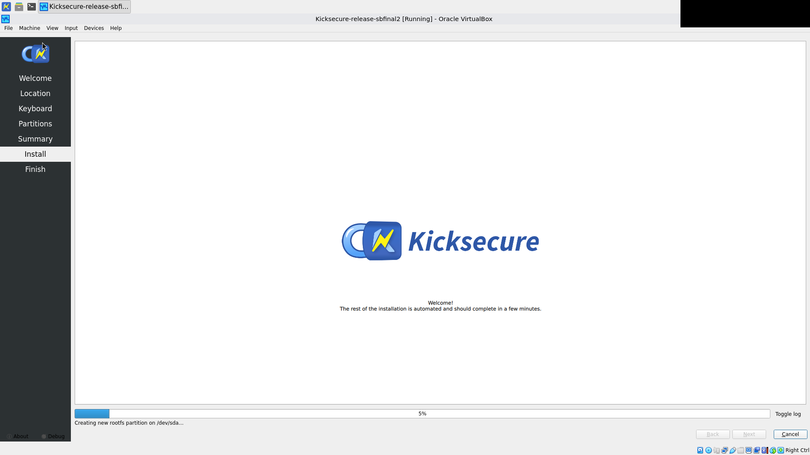
OCR text
fail content: validated install-done (live / pre-install)

OCR text
fail content: UNVALIDATED (no golden) final-last-frame
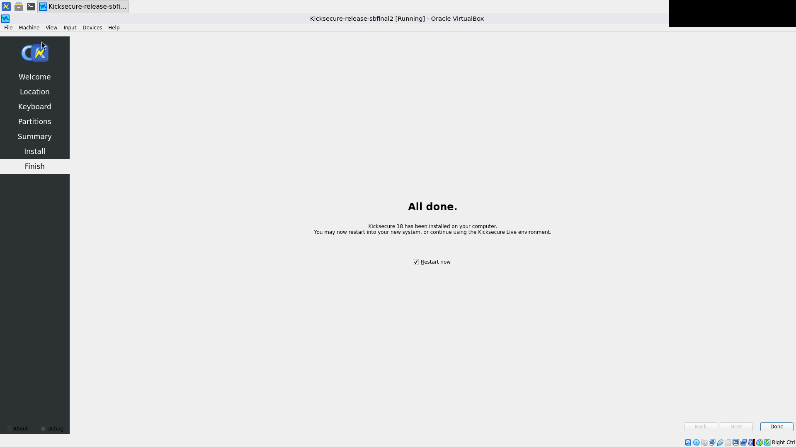
OCR text
vm-stopped-final
[state card -- rendered from VBoxManage showvminfo, not a screenshot]
VM powered off (run complete)
memory=4096
vram=128
chipset="piix3"
firmware="EFI"
SecureBoot="off"
VMState="poweroff"
nic1="nat"
fail content: UNVALIDATED (no golden) vbox-manager-final
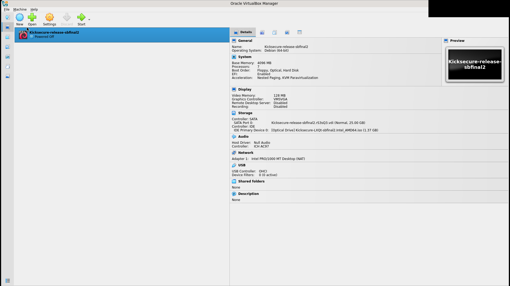
OCR text